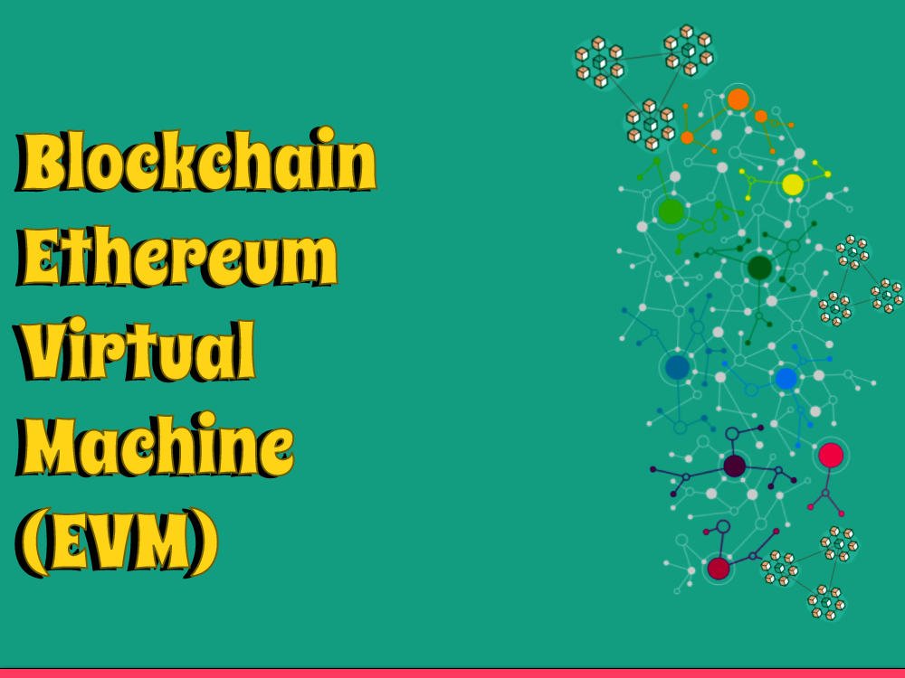

We'll plunge into the intriguing universe of Ethereum and investigate one of its center parts: the Ethereum Virtual Machine (EVM). As Ethereum keeps on altering the blockchain space, understanding how the EVM works is fundamental for getting a handle on its true capacity and opening the full capacities of decentralized applications (dApps). Thus, how about we leave on this excursion to unwind the secrets of the Ethereum Virtual Machine!
Understanding Ethereum
Before we dig into the Ethereum Virtual Machine, how about we handle the essentials of Ethereum itself. Ethereum is an open-source blockchain stage that empowers engineers to construct decentralized applications. It was proposed by Vitalik Buterin in 2013 and has since developed into one of the most noticeable blockchain networks.
Dissimilar to Bitcoin, which principally centers around shared electronic money exchanges, Ethereum goes past cash. It gives a stage to executing brilliant agreements, which are self-executing concurrences with predefined conditions. These shrewd agreements run on the Ethereum Virtual Machine, the foundation of Ethereum's programmable usefulness.
What is the Ethereum Virtual Machine (EVM)?
The Ethereum Virtual Machine (EVM) can be considered a sandboxed runtime climate inside the Ethereum organization. It fills in as a decentralized worldwide PC, executing brilliant agreements and working with the activity of decentralized applications. All in all, the EVM empowers the execution of code written in Ethereum's modifying language, Robustness.
The EVM's engineering is pivotal for the interoperability and security of the Ethereum biological system. It guarantees that code execution is deterministic, implying that given a similar information, the result will constantly be something very similar. This determinism ensures the consistency of savvy contract execution across all hubs in the organization.
EVM's Role in Smart Contract Execution
At the point when a shrewd agreement is made and sent on the Ethereum organization, it is written in undeniable level dialects like Robustness and afterward gathered into bytecode, a low-level portrayal of the code. This bytecode is the very thing the EVM comprehends and executes.
Each exchange on the Ethereum network sets off the EVM to execute the related shrewd agreement code. Diggers and hubs in the organization approve and execute these exchanges by running the bytecode through their nearby case of the EVM. This decentralized execution guarantees that all members settle on the state changes coming about because of the savvy agreement's execution.
EVM's Advantages and Limitations
At the point when a shrewd agreement is made and sent on the Ethereum organization, it is written in undeniable level dialects like Robustness and afterward gathered into bytecode, a low-level portrayal of the code. This bytecode is the very thing the EVM comprehends and executes.
Each exchange on the Ethereum network sets off the EVM to execute the related shrewd agreement code. Diggers and hubs in the organization approve and execute these exchanges by running the bytecode through their nearby case of the EVM. This decentralized execution guarantees that all members settle on the state changes coming about because of the savvy agreement's execution.
Conclusion
All in all, the Ethereum Virtual Machine (EVM) is the foundation of Ethereum's programmable usefulness. It executes savvy contracts and empowers the formation of decentralized applications, reforming different businesses. Understanding the EVM is fundamental for engineers and fans hoping to use Ethereum's abilities and add to the decentralized future. We trust this blog entry has revealed insight into the Ethereum Virtual Machine and enlivened you to investigate its tremendous conceivable outcomes further.
Keep in mind, as the Ethereum biological system keeps on developing, the Ethereum Virtual Machine will assume a significant part in forming the eventual fate of decentralized applications and blockchain innovation overall.
Thank you for reading, and stay tuned for more exciting insights into the world of blockchain and cryptocurrencies!